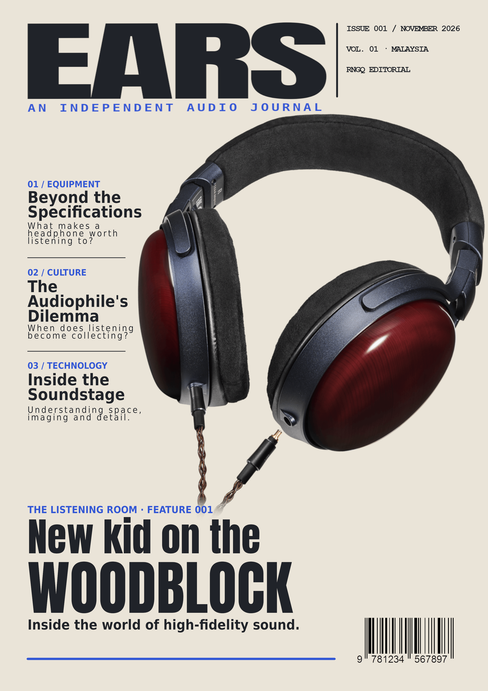

Project Overview
Publication: EARS
Concept: Sleek, minimalist design with a focus on high-quality imagery and clean typography.
Software: GIMP with Photoshop-like features modified in (with explicit permission)

Part B · Process documentation
A step-by-step walkthrough of how I created my magazine cover in Adobe Photoshop.
Publication: EARS
Concept: Sleek, minimalist design with a focus on high-quality imagery and clean typography.
Software: GIMP with Photoshop-like features modified in (with explicit permission)

Here's how I created the magazine cover:

A4 portrait, 300 PPI, RGB, layer groups and file organisation.

Organised layers into groups for better management and workflow.

Import the main headphone photograph, scale it proportionally and establish the composition.


Add the main headline, supporting stories, issue information and supporting typography.


Add barcode, issue number, date, small labels and finishing details.

Check alignment, margins, readability, contrast, spacing and visual balance.
Save the editable XCF/PSD and export a high-quality JPEG or PNG.